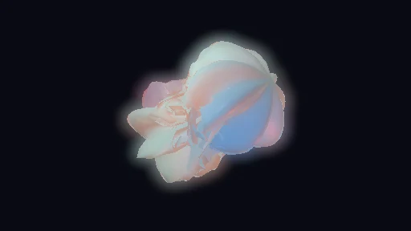
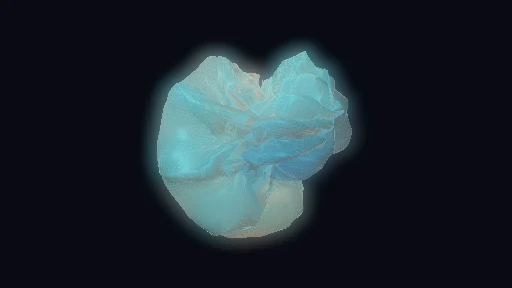
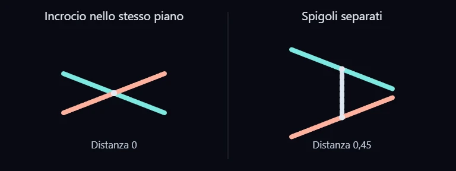

Contatto tra spigoli
Quando due pieghe lontane nel reticolo si incontrano a metà bordo, il contatto distribuisce la correzione sulle due pieghe. I confronti usano lo stesso preset e la stessa fase del movimento.
Membrana

Prisma v82
Prisma v83
Scarica preset Membrana
Tessuto
Prisma v82

Prisma v83
Scarica preset Tessuto
Dettaglio di un incrocio

Prova con due spigoli isolati. La distanza misurata al centro passa da 0 a 0,45 unità.
In modalità Esperto, apri Movimento → Animazioni → Vincoli di distanza e flessione e regola Contatto tra pieghe e Distanza di contatto.